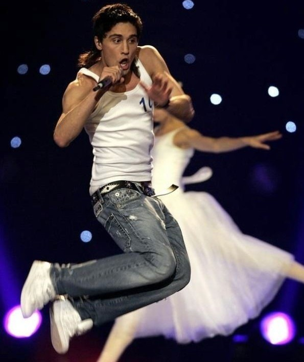
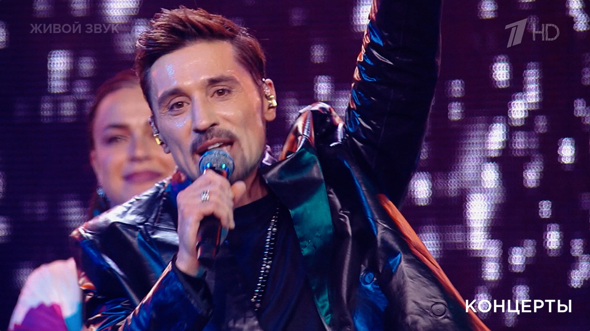

Главная |
Общая информация |
История |
Дискография |
Фильмография |
Источники |
Заказать Диск |
Контакты
Общая Информация
Имя: Дима Николаевич Билан (имя при рождении — Виктор Николаевич Белан)
Страна:Россия
Годы: родился 24 декабря 1981 года, в 2000 году вышел первый видеоклип на песню
Участие в группах: Билан за всю кареру не участвовал в каких-либо группах в качестве участника, мог лишь записывать с кем-то дуэты.
Самые популярные песни: «Я твой номер один» — один из ранних и очень узнаваемых хитов, «Невозможное возможно», «Молния», «It's My Life», «Это была любовь»
Основные достижения и награды: Участие в "Евроведении" в 2006 и 2008 годах, был наставником в шоу "Голос" и "Голос Дети". В 2018 году получил награду - Заслуженный артист Российской Федерации, а так же имеет множество мухыкальных наград.


© Все права защищены. А.Д. Кобелева. ЭФЦ331-1. 2026